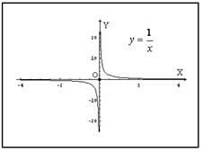
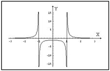

17.1.3. Вертикальные асимптоты
Прямая  является вертикальной
асимптотой графика функции
является вертикальной
асимптотой графика функции  , если хотя бы
одно из предельных значений или равно или.
, если хотя бы
одно из предельных значений или равно или.
является вертикальной
асимптотой графика функции , если хотя бы
одно из предельных значений или равно или.
График функции  имеет
вертикальную асимптоту
имеет
вертикальную асимптоту  , поскольку
, поскольку
имеет
вертикальную асимптоту , поскольку, .
Для разыскания вертикальных асимптот кривой
- находим на оси
 точки
разрыва функции
точки
разрыва функции  ;
; - выделяем те из них, в которых хотя бы один из пределов
функции (слева или справа) равен
 или
или  .
Пусть это будут точки , тогда
прямые будут вертикальными асимптотами
графика функции .
.
Пусть это будут точки , тогда
прямые будут вертикальными асимптотами
графика функции .

Например, для кривой вертикальными
асимптотами будут прямые  и
и  . Вертикальная прямая может оказаться асимптотой графика
функции и в том случае, когда точка
. Вертикальная прямая может оказаться асимптотой графика
функции и в том случае, когда точка  является концом интервала, в котором
определена функция . Это будет тогда, когда – левый конец интервала или, либо
когда – правый конец интервала или .
является концом интервала, в котором
определена функция . Это будет тогда, когда – левый конец интервала или, либо
когда – правый конец интервала или .
и . Вертикальная прямая может оказаться асимптотой графика
функции и в том случае, когда точка является концом интервала, в котором
определена функция . Это будет тогда, когда – левый конец интервала или, либо
когда – правый конец интервала или .Например, функция  определена в
интервале , и для нее ,
так что прямая (ось
определена в
интервале , и для нее ,
так что прямая (ось  ) является вертикальной асимптотой
графика функции .
) является вертикальной асимптотой
графика функции .
определена в
интервале , и для нее ,
так что прямая (ось ) является вертикальной асимптотой
графика функции .